Activity: Pattern Along Curve
This activity demonstrates the Along Curve patterning command. Work with a pattern of holes arrayed along a curve chain.
In this activity you will:
-
Create the pattern.
-
Change the pattern's parameters.
-
Add an occurrence of the hole.
Click here to download the activity file.
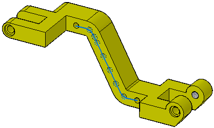
-
Open pattern_curve.par.
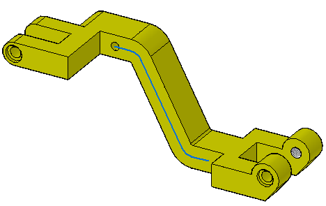
Select the hole at the top of the angled arm.
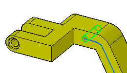
On the Home tab→Pattern group, choose the Along Curve command.
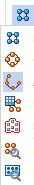
In the command bar, select Chain from the Select list.
Select the curve along the angled arm and accept it on the command bar.
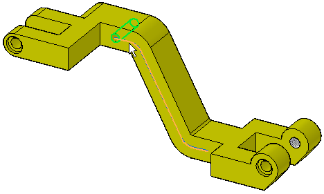
Select the left endpoint of the curve to define the anchor point.
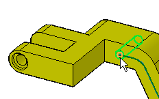
Select the pattern direction by moving the cursor until the arrow points to the right and then click to accept it.
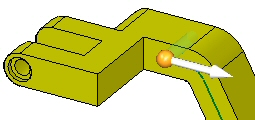
A preview is shown.
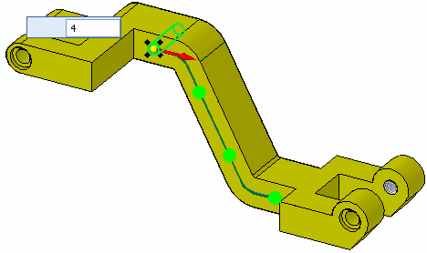
Change the Count to 8.
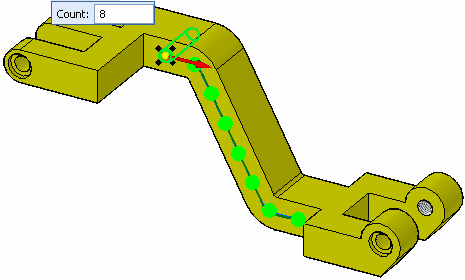
Accept this pattern by selecting the green check. Left-click to end the command.
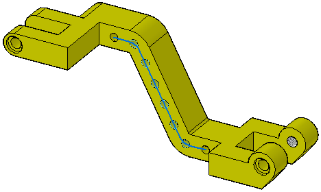
With the Along Curve command you can insert and offset a new occurrence by selecting a keypoint of the curve.
Select the pattern. Click the Edit Definition handle to access the command bar. Select the Insert Occurrence button .
Select the endpoint of the first curve segment in the chain.
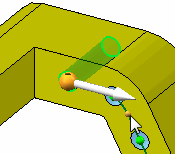
Type 5 in the Offset field in the command bar.
A new hole occurrence is created at 5 mm along the curve. Click to accept the offset. Click to accept the changes and exit the command.
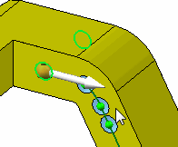

Save and close this file.
Just as with rectangular and circular patterns, you can suppress occurrences, add features, and modify the parent. You are free to experiment with those functions on the command bar as desired.
In this activity you learned how to create and edit a pattern of features along a curve. The pattern feature origin is used during pattern creation. With practice, you should be able to create any desired pattern along a curve.
-
Click the Close button in the upper-right corner of this activity window.